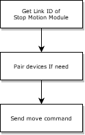
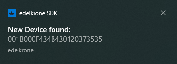
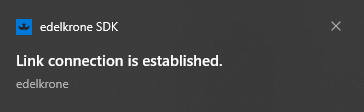

Stop Motion Module provides communication with a cable connection. So there one device is connected with the cable at the same time.
You can manage your device(s) according to the image below.

| Supported Connection Type | Supported Device | Supported Move Type | Supported Real-Time Axis | Description |
|---|---|---|---|---|
|
All Devices |
|
- | - |
Each Stop Motion Module has a unique link id, which is 24 characters long.
for example;
0013002F5053431920383031
You can control your device using this link ID.
Motion Control
Stop Motion Module supports three types of movement;
Limitations
-
There is only one device that can connect via cable.
-
If there are devices paired via wireless except connected with cable, the Real-Time Move is only working with the cable-connected device.
More Details About Limitations
How To Control Your Device With Stop Motion Module
The edelkrone SDK will notify you of each module plugged into the PC.

This notification appears in the notification area of your OS. This notification contains the Link ID of your link module. This ID is also required to distinguish if you have multiple modules when sending commands.
You will then again receive a notification that the SDK has recognized your module and open communication channel.

How to get the Link ID of Stop Motion Module and its status
To control your device, you first need to get the Link ID of the Stop Motion Module. You can get the Link ID of the Stop Motion Module.
Get Link Module List and Status Command
Also, this command you can use to get the status of other link modules.
Caution
Almost all commands need that ID. Also, the Link ID must be saved for later usage.
How to manage multiple devices
Stop Motion Module is automatically paired with the connected device via a patch cable. Paired device(s) after completing pairing are called a bundle.
But, you may want to control multiple devices; you need to pair them with the device connected with the Stop Motion Module. But Stop Motion Module does not have any pairing ability, and the edelkrone SDK does not have any pair command for the Stop Motion Module; you can use the edelkrone mobile application to pair them.
How to get the status of edelkrone devices in bundle
The bundle status is automatically updated from edelkrone devices when the pairing process is completed.
The status contains paired devices information, supported axis, supported real-time axis, bundle status, axis values of the devices.
You can get status by using this command status end point.
Send move command to your bundle
There are four types of movement. Except for real-time moves, other movement types can be controlled over HTTP API. But, HTTP has several overheads; therefore, you need to prefer Websocket Protocol to manage in real-time.
1. Joystick
This command takes the speed ratio in the axis to be moved from you and makes it move at that speed in that direction.
This movement supports a five-axis that depends on your bundle.
For example; Your bundle has three axes, for example, pan, tilt, and slide. And you want to send a move command in these three axes.
Just add the axes you want and their speed ratio.
You can also find more details about that api command here .
2. Keypose
You can save up to six poses. You can make a loop between these poses, or you can send your bundle from a point you want to a pose you want.
1. Keypose Store Current Pose
When you send this command, a pose with an index number of your bundle at the time will be stored for you.
You can also find more details about that api command here .
2. Keypose Store By Numeric Data
Numeric data means your axis values, which are you want to save as pose.
You can also find more details about that api command here .
3. Keypose Move with Fixed Duration
You can make your bundle go from any point to a pose you want with this command. But this movement takes place with the fixed duration you give. But movement speed varies according to the given time.
You can also find from more details about that api command here .
4. Keypose Move with Fixed Speed
You can make your bundle go from any point to a pose you want with this command. But this movement takes place with the fixed speed ratio you give. But the duration of the movement varies according to the given speed ratio.
You can also find more details about that api command here .
5. Loop Between Keyposes with Fixed Duration
With this command, you can create loops between the poses you recorded. This movement takes place with the fixed duration you give. But movement speed varies according to the given time.
You can also find more details about that api command here .
5. Loop Between Keyposes with Fixed Speed
With this command, you can create loops between the poses you recorded. This movement takes place with the fixed speed you give. But movement duration varies according to the given speed ratio.
You can also find more details about that api command here .
6. Read Keypose Numeric Information
With this command, you can read the axis values of the pose you stored. It takes an index as an argument and returns information that you want to get.
You can also find more details about that api command here.
7. Delete Keypose
When you store a keypose, it occupies a slot in a keypose list. If you need to add a new keypose, you need to delete keypose.
You can also find from more details about that api command here .
3. Focus Move
You can use it for focus movement when you plugged a focus module into your head.
You can also find from more details about that api command here .
4. Real-Time Move
The Stop Motion Module supports Real-Time.
Real-Time movement needs a reliable communication channel. So wireless connection does not support real-time movement.
You can also find more details about that api command here .